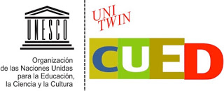

A Visualisation Dashboard for Contested Collective Intelligence Learning Analytics to Improve Sensemaking of Group Discussion
Resumen
La habilidad para participar y contribuir a los debates es importante para el aprendizaje informal y formal. Especialmente cuando se abordan temas altamente complejos, puede ser difícil apoyar a los alumnos que participan en una discusión grupal efectiva y mantenerse al tanto de toda la información generada colectivamente durante la discusión. La tecnología puede ayudar con el compromiso y razonamiento en debates tan grandes, por ejemplo, puede monitorear cuán saludable es un debate y proporcionar indicadores sobre la distribución de la participación. Un marco especial que pretende aprovechar la inteligencia de grupos de pequeños a muy grandes con el apoyo de herramientas de discurso y argumentación estructuradas es la Inteligencia Colectiva Controvertida (ICC). Las herramientas de CCI proporcionan una fuente rica de datos semánticos que, si se procesan de manera adecuada, pueden generar un sofisticado análisis del discurso en línea. Este estudio presenta un panel de visualización con varios análisis visuales que muestran aspectos importantes de los debates en línea que han sido facilitados por las herramientas de discusión de CCI. El tablero de instrumentos fue diseñado para mejorar la creación de sentidos y la participación en los debates en línea y se ha evaluado con dos estudios, un experimento de laboratorio y un estudio de campo, en el contexto de dos institutos de educación superior. Este artículo informa sobre los resultados de una evaluación de usabilidad del panel de visualización. Los hallazgos descriptivos sugieren que los participantes con poca experiencia en el uso de visualizaciones analíticas pudieron desempeñarse bien en determinadas tareas. Esto constituye un resultado prometedor para la aplicación de tales tecnologías de visualización, ya que las interfaces analíticas de aprendizaje centradas en el discurso pueden ayudar a apoyar el compromiso de los alumnos y su razonamiento en debates en línea complejos.
Palabras clave
Texto completo:
PDF (English)Referencias
Adams, S. A. (2010). Revisiting the online health information reliability debate in the wake of “web 2.0”: An inter-disciplinary literature and website review. International Journal of Medical Informatics, 79(6), 391–400. https://doi.org/10.1016/j.ijmedinf.2010.01.006
Bangor, A., Kortum, P., & Miller, J. (2009). Determining what individual SUS scores mean: Adding an adjective rating scale. Journal of Usability Studies, 4(3), 114–123.
Bangor, A., Kortum, P. T., & Miller, J. T. (2008). An Empirical Evaluation of the System Usability Scale. International Journal of Human-Computer Interaction, 24(6), 574–594. https://doi.org/10.1080/10447310802205776
Bennett, S., Maton, K., & Kervin, L. (2008). The ‘digital natives’ debate: A critical review of the evidence. British Journal of Educational Technology, 39(5), 775–786. https://doi.org/10.1111/j.1467-8535.2007.00793.x
Brooke, J. (2013). SUS: a retrospective. Journal of Usability Studies, 8(2), 29–40.
Buckingham Shum, S. (2003). The roots of computer supported argument visualization. In Visualizing argumentation (pp. 3–24). Springer. Retrieved from http://link.springer.com/chapter/10.1007/978-1-4471-0037-9_1
Buckingham Shum, S., & others. (2008). Cohere: Towards web 2.0 argumentation. COMMA, 8, 97–108.
De Liddo, A. (2014). Enhancing Discussion Forums with Combined Argument and Social Network Analytics. In A. Okada, S. Buckingham Shum, & T. Sherborne (Eds.), Knowledge Cartography (pp. 333–359). Springer London. Retrieved from http://link.springer.com/chapter/10.1007/978-1-4471-6470-8_15
De Liddo, A., & Buckingham Shum, S. (2014). New Ways of Deliberating Online: An Empirical Comparison of Network and Threaded Interfaces for Online Discussion. In E. Tambouris, A. Macintosh, & F. Bannister (Eds.), Electronic Participation (pp. 90–101). Springer Berlin Heidelberg. Retrieved from http://link.springer.com/chapter/10.1007/978-3-662-44914-1_8
De Liddo, A., Buckingham Shum, S., & Klein, M. (2014). Arguing on the Web for Social Innovation: Lightweight Tools and Analytics for Civic Engagement. In 8th ISSA Conference on Argumentation. Amsterdam.
De Liddo, A., Sándor, A., & Buckingham Shum, S. (2012). Contested Collective Intelligence: Rationale, Technologies, and a Human-Machine Annotation Study. Computer Supported Cooperative Work (CSCW), 21(4–5), 417–448. https://doi.org/10.1007/s10606-011-9155-x
Hair, D. C. (1991). LEGALESE: A Legal Argumentation Tool. SIGCHI Bull., 23(1), 71–74. https://doi.org/10.1145/122672.122690
Harasim, L. (2000). Shift happens: online education as a new paradigm in learning. The Internet and Higher Education, 3(1–2), 41–61. https://doi.org/10.1016/S1096-7516(00)00032-4
Klein, M., & Convertino, G. (2014). An embarrassment of riches. Communications of the ACM, 57(11), 40–42. https://doi.org/10.1145/2629560
Malone, T. W., & Klein, M. (2007). Harnessing Collective Intelligence to Address Global Climate Change. Innovations: Technology, Governance, Globalization, 2(3), 15–26. https://doi.org/10.1162/itgg.2007.2.3.15
Malone, T. W., Laubacher, R., & Dellarocas, C. (2010). The collective intelligence genome. IEEE Engineering Management Review, 38(3), 38.
Novak, J. D. (1998). Learning, creating, and using knowledge.
Concept MapsTM as Facilitative Tools in Schools and Corporations. Mahwaw: Lawrence Erlbaum. Retrieved from http://cmapspublic2.ihmc.us/rid=1J61L9RDV-1KYY1F2-W9T/novakcap2.pdf
Rahwan, I., Zablith, F., & Reed, C. (2007). Laying the foundations for a World Wide Argument Web. Artificial Intelligence, 171(10–15), 897–921. https://doi.org/10.1016/j.artint.2007.04.015
Rubin, J., & Chisnell, D. (2008). Handbook of Usability Testing: Howto Plan, Design, and Conduct Effective Tests (2 edition). Wiley.
Scheuer, O., Loll, F., Pinkwart, N., & McLaren, B. M. (2010). Computer-supported argumentation: A review of the state of the art. International Journal of Computer-Supported Collaborative Learning, 5(1), 43–102. https://doi.org/10.1007/s11412-009-9080-x
Smith, M. A., & Fiore, A. T. (2001). Visualization Components for Persistent Conversations. In Proceedings of the SIGCHI Conference on Human Factors in Computing Systems (pp. 136–143). New York, NY, USA: ACM. https://doi.org/10.1145/365024.365073
Ullmann, T. D. (2004). maQ-Fragebogengenerator. Make a Questionnaire. Retrieved from http://maq-online.de
DOI: https://doi.org/10.5944/ried.22.1.22294
Enlaces refback
- No hay ningún enlace refback.
| RIED. Revista Iboeroamericana de Educación a Distancia (La Revista Iberoamericana de la Educación Digital) | |||
| Director/Editor: Lorenzo García Aretio UNED, Facultad de Educación C/ Juan del Rosal, 14 28040 Madrid (Spain). ried@edu.uned.es | ISSN:1138-2783 E-ISSN: 1390-3306 Depósito Legal: M- 36.279 -1997 Edita: Asociación Iberoamericana de Educación Superior a Distancia (AIESAD) | ||
| Reconocimiento NoComercial (by-nc): Se permite la generación de obras derivadas siempre que no se haga un uso comercial. Tampoco se puede utilizar la obra original con finalidades comerciales. | |||
| SÍGUENOS EN: | |||
Colaboran/consorcian con RIED:  | |||
{kind=link}